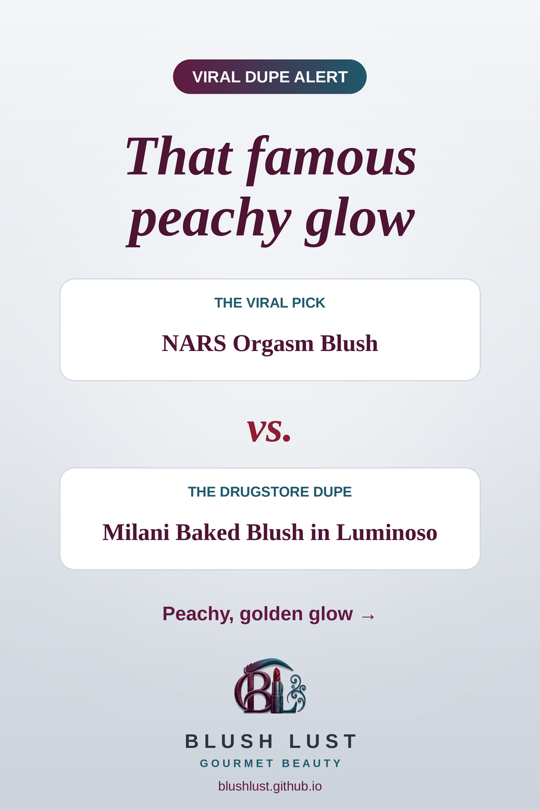

The iconic powder blush, for less
A peachy-pink blush with a soft golden shimmer. Luminoso has been called the go-to dupe for years.
This post contains affiliate links. If you buy through them, we may earn a small commission at no extra cost to you. As an Amazon Associate I earn from qualifying purchases.
Milani Baked Blush in Luminoso
The viral pickNARS Orgasm Blush
vs.
The dupeMilani Baked Blush in Luminoso

See today’s price on Amazon.ca →
Comparisons reflect what beauty shoppers commonly say, not lab testing. Shades and formulas vary — check reviews before you buy.
More cheeks dupes
Featured in: The Rosy Cheek Edit: 8 Viral Blush Dupes from the Drugstore →